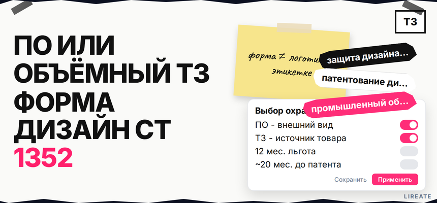
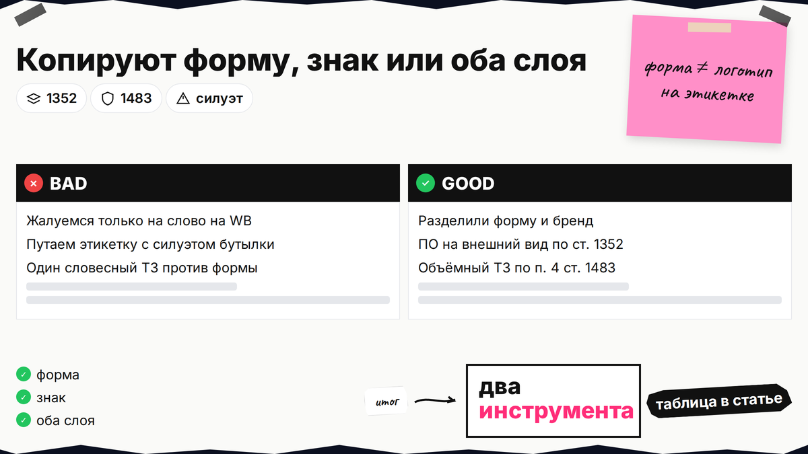
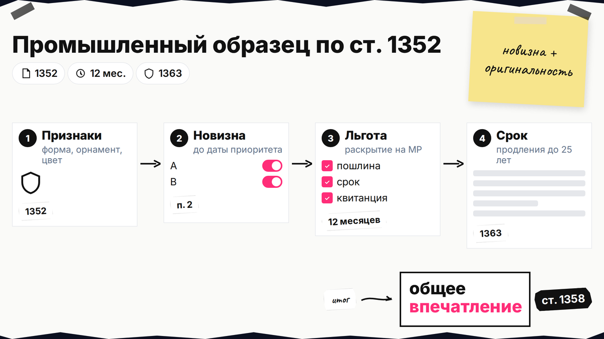
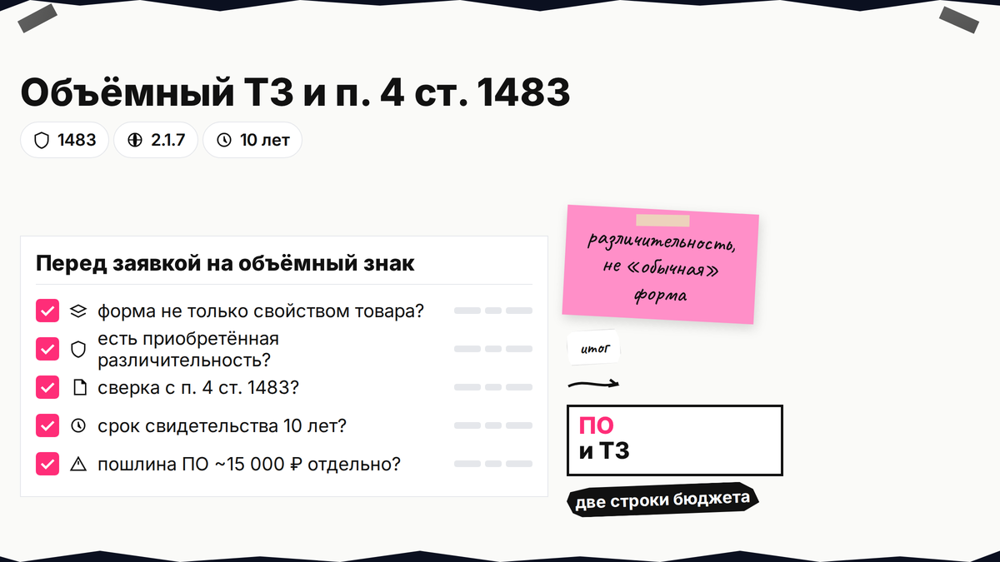

Конкурент скопировал форму вашего изделия, а логотип оставил свой - и кажется, что вы ничего не теряете. Словесный товарный знак не запрещает чужой силуэт, а патент на промышленный образец не заменяет название на упаковке. Ниже вы сравните оба инструмента, пройдёте чек-лист до выкладки на маркетплейс и выберете заявку на ПО, на знак или на обе без потери приоритета.

TL;DR / Быстрый инсайт: Промышленный образец (ПО) охраняет внешний вид изделия - форму, орнамент, цветовую связку, если решение новое и оригинальное по существенным признакам. Объёмный товарный знак привязывает форму упаковки или товара к вашему источнику, но экспертиза требует различительной способности, а не "обычной" бутылки (п. 4 ст. 1483). Минимум госпошлин на один ПО - ориентир 15 000 ₽ (2 000 + 3 000 + 10 000) по ГУ Роспатента; патент на ПО - до 25 лет продлениями, свидетельство на ТЗ - 10 лет. Публикация на сайте и WB до заявки бьёт по новизне - учитывайте 12 месяцев льготы (п. 4 ст. 1352). Нормы сверены на 01.11.2026; с 01.01.2027 запланированы правки п. 1 ст. 1352 (296-ФЗ) - уточняйте текст на дату подачи.
Промышленный образец - патент на внешний вид серийного изделия. Товарный знак - маркировка источника товара (ст. 1477 ГК РФ). Материал не заменяет консультацию поверенного; пошлины ТЗ - только в таблице Роспатента.

Откройте карточки конкурентов и отметьте: повторяют силуэт, пропорции, фактуру (кандидат в ПО) или название и логотип на той же упаковке (словесный или комбинированный ТЗ). Если клонят и форму, и маркировку, закладывайте две заявки - см. разбор комбинированной охраны.
Делайте: сделать скриншоты с датой до претензии. Не делайте: ждать, что один словесный знак запретит чужой корпус без логотипа - для силуэта нужен ПО или объёмный ТЗ с сильной различительностью.

ПО патентоспособен, если решение внешнего вида новое и оригинальное по существенным (эстетическим) признакам: форма, конфигурация, орнамент, цвета, линии (п. 1 ст. 1352). Новизна - совокупность признаков не была известна до даты приоритета (п. 2). Оригинальность - нет решения сходного назначения, дающего то же общее впечатление у информированного потребителя (п. 3).
Элементы, нужные только для работы изделия (ручка, к которой удобно хвататься по физике), не охраняются как существенные (п. 1, 5 ст. 1352). Если главное в дизайне - технический эффект, а не "красота", смотрите способы защиты изобретения (патент на технологию, ноу-хау), а не только ПО.
Делайте: выделить на макете именно эстетические детали для комплекта изображений. Не делайте: подавать "стандартную" форму отрасли без аргумента оригинальности.

Форму бутылки или коробки можно заявить как объёмный или комбинированный знак, если она не определяется исключительно или главным образом свойством или назначением товара (п. 1 п. 4 ст. 1483). Простая традиционная форма чаще не проходит экспертизу без приобретённой различительности (Руководство Роспатента, п. 2.1.7). Примеры устойчивых форм в практике - обзор ГАРАНТ (Chupa Chups, флакон Chanel).
Словесный и графический знак проверяйте в чек-листе L01; для одежды см. регистрацию бренда одежды (L25).
Делайте: честно спросить, узнает ли рынок форму без надписи. Не делайте: обещать себе регистрацию "как у всех" цилиндрических банок без доказательств различительности.
| Критерий | Промышленный образец | Объёмный / комбинированный ТЗ |
|---|---|---|
| Что охраняет | Внешний вид изделия (эстетика) | Источник товара: форма, связанная с вашим брендом |
| Главный барьер | Новизна + оригинальность (ст. 1352) | Различительность, п. 4 ст. 1483 |
| Срок | 5 лет + продления до 25 лет (ст. 1363) | 10 лет, продление (инструкция Роспатента) |
| Ориентир пошлин | ~15 000 ₽ мин. на 1 вариант (ГУ ПО) | Отдельная таблица ТЗ, не суммируйте с ПО |
| Копируют только форму | Сильный инструмент (ст. 1358, общее впечатление) | Работает, если форма узнаваема как ваш бренд |
| Копируют только логотип | Не закрывает название | Словесный / изобразительный ТЗ |
Итоговый вердикт: серийный уникальный силуэт без узнаваемой "брендовой" формы - чаще старт с ПО. Форма уже ассоциируется с вами на рынке - добавьте объёмный ТЗ. Этикетка с ярким логотипом и общим рисунком - комбо: ПО на визуальный образ, ТЗ на отличительные слова и знак (gorodissky.ru).
Только форма. Подавайте ПО и ищите копии по критерию общего впечатления. Форма и название. Две заявки; учтите приказ № 141 о смежных объектах и ст. 1352 п. 5.
Функциональная форма. Если дизайн диктует только удобство или объём - ПО и объёмный ТЗ могут не пройти; ядро решения - в защите изобретения (L05). Авторское право дополняет стратегию для разового рисунка, но серийный корпус закрывайте регистрацией ПО.
Делайте: записать выбранный сценарий в одностраничное memo для команды. Не делайте: смешивать претензию по форме со спором только по словесному знаку без нужного title.
Workflow:
Объект охраны (форма / знак / оба) → проверка функции vs эстетики → поиск конфликтов (ПО + Поисковая платформа) → пауза массовой публикации → заявка ПО (ст. 1377, изображения, группа с единым замыслом) → заявка ТЗ по таблице пошлин → маркировка реестровыми данными → мониторинг копий на MP
Предельный срок госуслуги по выдаче патента на ПО - до 20 месяцев 2 недель при заявке без существенных недочётов (страница ГУ). Делайте: заложить переписку с экспертизой. Не делайте: считать защиту активной до выдачи патента (ст. 1363).
На один ПО без лишних вариантов заложите 15 000 ₽ (2 000 + 3 000 + 10 000 ₽) по ГУ. ТЗ считайте отдельной строкой по таблице. Делайте: сохранить квитанции. Не делайте: верить устаревшим калькуляторам с 1 700 ₽ за ПО.
После регистрации настройте ежемесячный просмотр категории на маркетплейсах и открытых реестров. При нарушении формы приложите патент и сравнение общего впечатления; при споре по знаку - свидетельство ТЗ и доказательства использования.
Если нужна помощь с заявкой на промышленный образец, на Лирейт доступно сопровождение патентования дизайна; для словесного и объёмного знака - регистрация товарного знака. Оба шага не отменяют самостоятельную проверку новизны и выбор сценария из таблицы выше.
Материал проверен: эксперт Елена Ковалева (Главный эксперт по SEO/GEO).
Достоверность данных: нормы ГК РФ, пошлины и сроки ГУ сверены с публикациями Роспатента на 01.11.2026; показы Яндекс Вордстат в среде подготовки материала не запрашивались.
ПО охраняет эстетику корпуса по ст. 1352. Объёмный ТЗ связывает форму с вашим источником, но нужна различительность и обход п. 4 ст. 1483. Выберите инструмент по таблице сравнения в тексте.
Да, комбинированная стратегия типична для этикетки: ПО на общий визуальный образ, ТЗ на логотип и слово. Согласуйте объекты, чтобы не получить отказ по пересечению со ст. 1352 п. 5 и ранними знаками.
Базовый срок - 5 лет с даты подачи заявки; продления по 5 лет, не более 25 лет суммарно для заявок после 01.01.2015 (ст. 1363).
Оцените 12 месяцев с момента раскрытия и риск потери новизны; соберите доказательства даты показа. Надёжнее подать заявку до массовой публикации фото на MP и в соцсетях.
Опирайтесь на патент ПО и критерий общего впечатления при сходном назначении (ст. 1358). Один словесный ТЗ не закрывает чужой силуэт.
Ориентир 15 000 ₽ минимум на один вариант (2 000 + 3 000 + 10 000 ₽) по странице ГУ Роспатента; дополнительные образцы в группе удорожают этапы.
AP полезно для графики и разовых макетов, но для серийной формы изделия планируйте регистрацию ПО; AP не заменяет запрет копировать корпус в объёме патента.